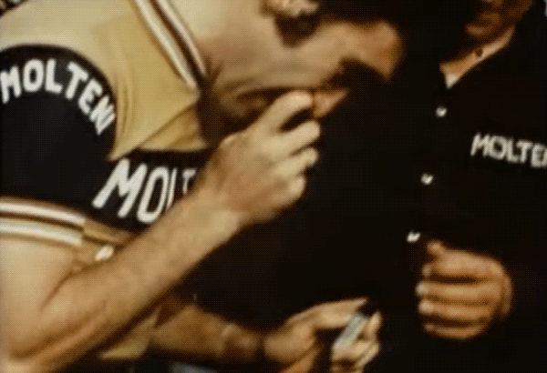

Én time – 49.431 meter

For 46 år siden satte Eddy Merckx sin legendariske timerekord på 49,431 km i Mexico City. En æra sluttede med Merckx’s rekord: Merckx var den sidste til at sætte timerekord på en klassisk stålcykel med 2 klassiske hjul med eger, klassisk gedebukkestyr og tåclipspedaler.
I de sidste dage af september 1972 besluttede Eddy Merckx sig endeligt for at realisere timerekordforsøget. Han havde afsluttet sæsonen med en Tour de France-Giro-dobbel. Merckx var i sit livs form – og det skulle være nu, at timerekorden skulle angribes.

Merckx’s sponsor, den italienske pølsefabrikant Molteni, ønskede at rekordforsøget skulle køres i Milano. Men i stedet valgte Merckx Agustín Melgar Velodrome i Mexico City. Velodromen er 330 meter lang og har 39 graders sving – og så ligger den i næsten 2300 meters højde. Højden betyder, at luften er tynd og dermed giver mindre luftmodstand. Men det betyder også, at den energi, der blev leveret til musklerne, er lavere.
Ole Ritter satte timerekorden i Mexico City. Du har en fordel på en bane i den højde, hvis du har nok luft. Men du skal tilpasse dig.
Eddy Merckx
Universiteterne i Milano og Liège testede Merckx. I seks uger forberedte han sig ved at simulere virkningerne af Mexicos tynde luft. Med 30 iltflasker i hans garage, kørte han op i mod 6 timer om dagen på statiske ruller. Læger var til stede og kontrollerede Merckx’s helbred og tilstand. Alt så godt ud. Bortset fra da en af iltbeholderne på et tidspunkt eksploderede, så en af træningslægerne blev såret, og Merckx et øjeblik troede, at hans hus var sprunget i luften.
Merckx fløj til Mexico City den 21. oktober. Atmosfæren var afslappet blandt Merckx’s ledsagere, men han selv var mindre afslappet. Han vidste, at timerekorden ville kræve det maksimale.
Ved ankomsten til Mexico var det blæsende og der var lidt regn. Forsøget måtte udskydes. Merckx var dog alligevel dybt koncentreret. Han talte ikke meget. Sådan var han altid, når han var opsat – og følte sig klar. 

Efter et par nervepirrende dage, kom dage, hvor Merckx skulle forsøge at slå timerekorden. Den 25. oktober sænkede stilheden sig over den fyldte Agustín Melgar Velodrome. Startskuddet lød klokken 08:46. Merckx var i dyb koncentration. Han havde brug for al sin mentale og fysiske energi. Han vidste udemærket størrelsen på den udfordring, der ventede ham.

Merckx’s oprindelige plan var, at slå Ole Ritters rekord [48.653 kilometer] med 240 meter. En senere revideret tidsplan lød på et langt mere ambitiøst mål: 49,2 kilometer.
Efter 10 kilometer var Merckx 28 sekunder foran Ritter. Merckx’s start var ikke bare lovende, men også ødelæggende hurtig. Så hurtig, at det bekymrede hans holdleder Giorgio Albani.

Merckx havde en stærk start og fortsatte med at køre stærkt. Albani måtte stoppe ham, når han accelererede og angreb for meget. Albani stod tæt på hvor klokken hang. Han gik fremad eller baglæns, for at indikere om Merckx var foran eller efter tidsplanen.
En så hurtig start indeholdt faren for at gå ned midtvejs. Merckx havde sin erfaring at holde sig til. Men i løbet af de 60 minutter i intens ensomhed, blev tre spørgsmål hele tiden ved med at punktere hans mentale modstandskræft:
Hvor hurtigt kører jeg? Hvor langt tid er der igen? Kan jeg holde tempoet?

Merckx fik en krise efter 35 minutter. Men han var i stand til at stabilisere sit tempo kort efter. Hen i mod slutningen var Merckx endda i stand til at skrue tempoet op.
Det første resultat på lystavlen lød på 49.408 meter. Men der blev senere korrigeret til 49.431 meter. Merckx slog Ole Ritters rekord med 788 meter.
Der var ikke meget udbrud af lykke eller eufori at spore hos Merckx efter det dramatiske løb. Merckx var udmattet. Næsten sammenbrudt. Han var i smerte.

Merckx måtte støtte sig til sin svigerfar [Lucien Acou], da han gik mod omklædningsrummet. Der blev ikke talt. Merckx kunne næsten ikke gå.
Der er det hårdeste jeg nogensinde har gjort. Det var den mest intense time i min karriere. Det var smerte, smerte og smerte.
Eddy Merckx